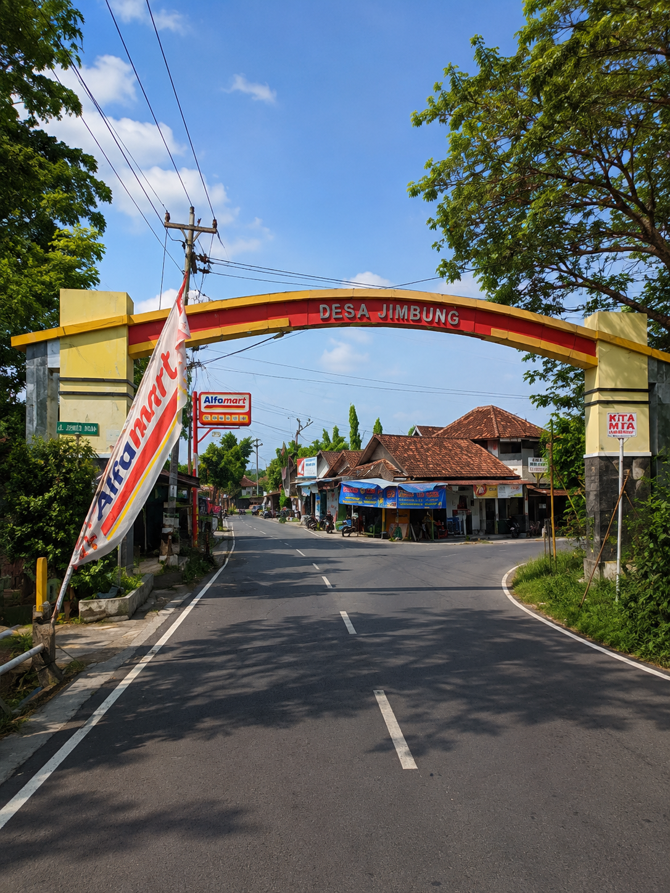

TENTANG JIMBUNG
Desa Jimbung merupakan wilayah pedesaan terbesar dan terpadat di Kecamatan Kalikotes, Kabupaten Klaten, Jawa Tengah. Selain dikenal dengan kegotongroyongan warganya yang kuat, desa ini memiliki potensi besar sebagai destinasi Desa Wisata berbasis budaya dan alam, yang terkenal lewat objek wisata ikonik seperti Sendang Bulus Jimbung serta tradisi tahunan Syawalan yang selalu ramai dikunjungi masyarakat luas.
Pelayanan
Wisata
Transportasi
ADA APA DI JIMBUNG
Total Penduduk
5.432 Jiwa
Luas Wilayah
120 Hektar
Jumlah Dusun
33 Dusun
Jumlah RT/RW
107 RT 29 RW
Lokasi Kelurahan Jimbung
Temukan lokasi kantor kelurahan Jimbung melalui peta berikut.